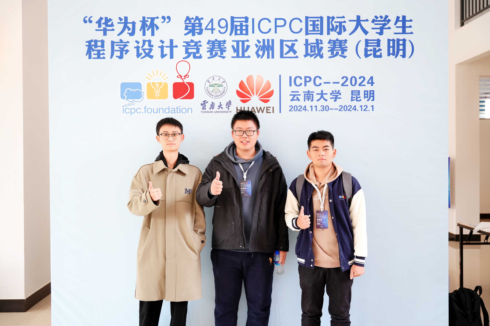
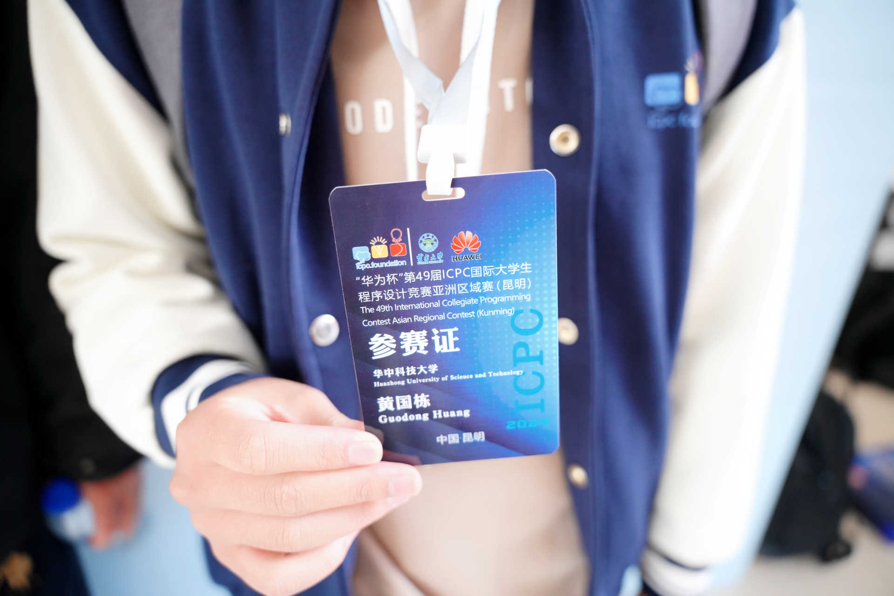
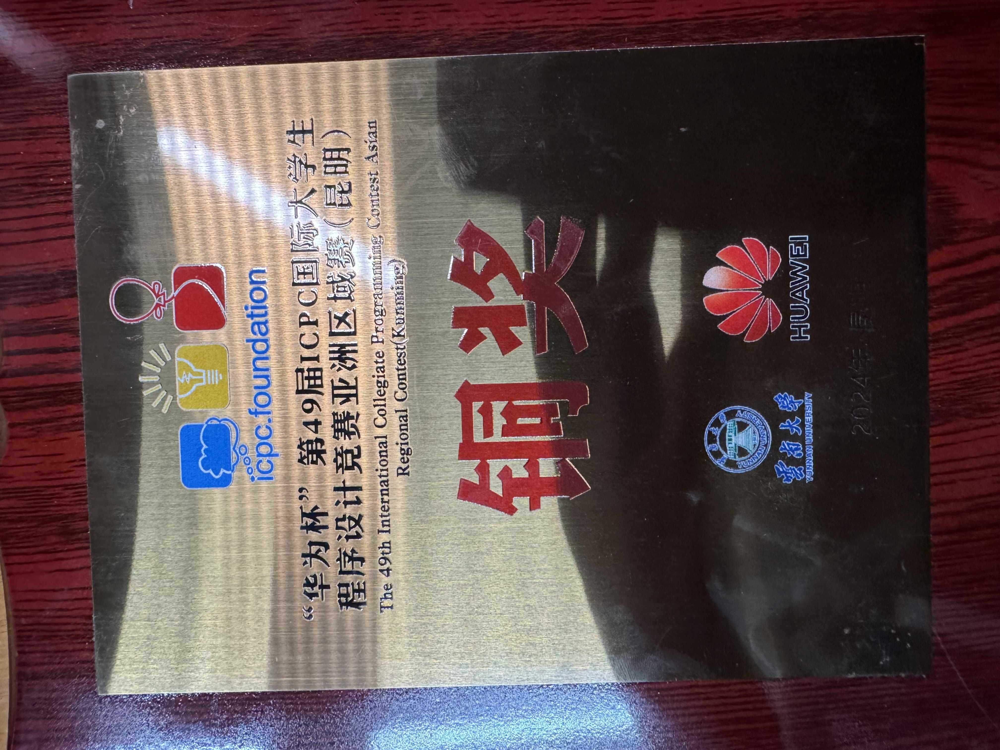
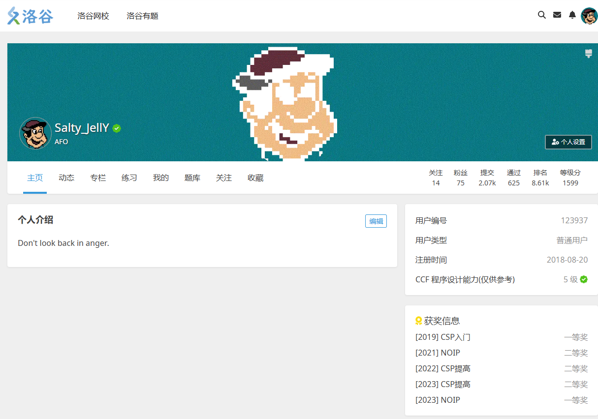
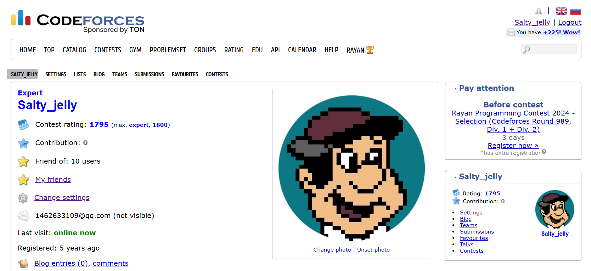

- 大概在2018年9月，我一时兴起报了学校的信息学奥赛社团，由此接触编程。
- 2019年，NOIP普及组取消，CSP-J/S粉墨登场，自己在CSP-J2019首次打比赛
- 2021-2022年，以信息学特长生身份进入江苏省淮阴中学，彼时才算对算法竞赛有了大致的认识。 先后参与了CSP-S2021,NOIP2021,CSP-S2022,NOIP2022全部折戟，未曾获得过一等奖。 这算是对自己打击很大的一件事，一定程度上浇灭了自己对oi的热情。 同时，这两年参赛也受到了不少来自疫情的时代冲击，也受到了不少来自课内学习的压力。 时至今日也不清楚那段时光对自己来说意味着什么，改变了我什么， 但隐约觉得那是自己变化最大的时期。
-
2023年，在教练的鼓励下，时年高三的我又决定参赛。
当时的机房内只剩自己的学弟学妹，长江后浪推前浪，自己的水平早就不如他们。
当时的自己在机房和教室间辗转。在备战高考的紧张氛围中抽空去机房做题。
这一年也没有了疫情，仿佛是和过去属于自己和时代的黑暗时光告了别。
在CSP-S2023中，自己死扣T2，部分分没打满，依然没有一等
但来不及难过，紧接着便是NOIP2023，
自己在场上可谓是想尽了办法打部分分，检查了好多遍，
最后果真查出了不少bug，好在场上还是调过了。
赛后自测T1挂了30分，十分难过，否则成绩还算不错。
但最后还是有惊无险地拿到了一等奖。

过去了那么久，我一直在想：
这场NOIP，究竟是我对自己的救赎？
还是上天对于一个迟钝却执着的oier的眷顾？
不管怎么样，自己的oi生涯虽然满是坎坷，但最后可算没有遗憾。 也由此，我来到了华中科技大学计算机科学与技术专业。
- 可巧不巧，虽然觉得自己不大适合打算法竞赛。 可似乎与它脱不了干系了一样，到了大学，自己也是阴差阳错成了名acmer。 队长是大学同班同学&高中校友&同一机房的oier 吴高宇。 在他的带领下，自己也是大一就有机会参与到一场CCPC与ICPC中：
-
CCPC郑州：
.JPG)
Solved 2 problems. 铁牌 死于M题的二分精度。归根结底是经验不足。那题的做法是自己提出来的，最后没过很内疚。 -
ICPC昆明：

 
Solved 5 problems. 铜牌前列
队里没人会计算几何导致的，五题区唯二没有过H的队伍。 也是因为H耽误了好多时间，否则光靠优秀的罚时也能杀到银牌区的。
这场也算是吸取了郑州的教训，没有在H题上吊死，而是放人去切后面的题。事实证明这是对的。我们在封榜后十分钟左右冲到了银牌区。
自己本场一眼秒了签到题，其余时间则在做一些辅助工作和调H。队长和另一位队友共同发挥，切了后面四题。
能说什么呢？很遗憾，但也算打出了风采。
-
寄语&感悟：
- 希望队长以后能实现自己在xcpc上的鸿鹄之志。
- 希望另一位队友能在网安有一片灿烂的前程。
- 对于自己的话，“留在这里，还是继续走，我不知道。”
我只愿：
面朝大海，春暖花开
以下是自己在相关编程网站的账号：
- 洛谷 
- codeforces 